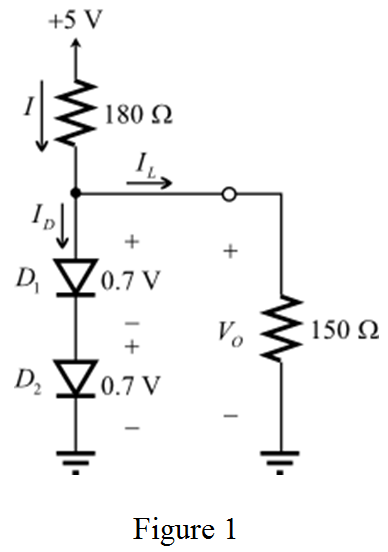

Step 1:
Refer to Figure P4.56 in the textbook.
Draw the circuit with currents and voltages notations.

Step 2:
The expression for the diode current,  is,
is,
…… (1)
Here,
The current flowing through the diode is  ,
,
The diode reverse bias current is  ,
,
The voltage across the diode is  , and
, and
The thermal equivalent of voltage is  .
.
The expression for the thermal equivalent voltage,  is,
is,
Here,
Boltzmann’s constant, ,
Room temperature, , and
Charge of an electron, .
Substitute the corresponding values in the equation for thermal equivalent voltage.

Step 3:
(a)
Consider that the load resistance, .
Use iterative analysis to find the output voltage,  .
.
Apply Kirchhoff’s current law to the circuit in Figure 1.
Under no load condition, , and it results .
Each diode has a voltage drop of 0.7 V at a current of 10 mA.
Divide the diode current equations for the two diodes.
…… (2)
Simplify equation (2) to get an expression for the voltage,  across the diode,
across the diode,  .
.
 …… (3)
…… (3)
Step 4:
Apply Kirchhoff’s voltage law to the circuit in Figure 1 at no load condition.
Substitute 0.7 V for  , 10 mA for
, 10 mA for  , 26 mV for
, 26 mV for  , and 20 mA for in equation (3).
, and 20 mA for in equation (3).
Thus, the results of first iteration are, and .
Step 5:
Now, calculate the current flowing though the diode branch.
Substitute 0.7 V for  , 10 mA for
, 10 mA for  , and 19.8 mA for
, and 19.8 mA for  in equation (3).
in equation (3).
Thus, the results of second iteration are, and .
This diode voltage is almost similar to the earlier iteration diode voltage.
Step 6:
Calculate the diode current at the diode voltage.
Thus, the net resultant diode voltage,  when diode is in ON mode and the circuit in no load is, .
when diode is in ON mode and the circuit in no load is, .
Now, calculate the current flowing through the load resistor as follows:
Substitute 0.717 V for  and
and  for
for  .
.
Step 7:
Calculate the resultant current in the diode branch after load is connected.
Now, calculate the voltage across the load resistor.
Thus, the voltage across the load resistor,  is .
is .
Step 8:
(b)
The net resultant diode voltage,  when diode is in ON mode and the circuit in no load is, .
when diode is in ON mode and the circuit in no load is, .
Calculate the no load output voltage.
Thus, the no load output voltage,  is .
is .
Step 9:
(c)
Find the lowered supply voltage value to get a loaded output voltage with 0.1 V of its nominal value.
Nominal value of the load voltage is, .
The following is the acceptable lower output voltage.
Calculate the voltage across each diode as follows:
Step 10:
Substitute 0.717 V for , 10.24 mA for , 0.65 mA for  , and 26 mV for
, and 26 mV for  in equation (2) to calculate
in equation (2) to calculate  .
.
Calculate the current flowing through the load.
Step 11:
Calculate the current flowing through resistor.
Apply Kirchhoff’s voltage law to the circuit in Figure 1.
Substitute 9.387 mA for  , and for
, and for  .
.
Thus, the lowered supply voltage,  is .
is .
Step 12:
(d)
The supply voltage is reduced by 2 V to maintain the loaded output voltage within 0.1 V of its nominal voltage.
Assume that the supply voltage is increased by same amount. Therefore,

Use iterative method to determine the load voltage.
Calculate the diode current as follows:
Step 13:
Substitute 0.7 V for  , 10 mA for
, 10 mA for  , 31.12 mA for
, 31.12 mA for  , and 26 mA for
, and 26 mA for  in equation (3).
in equation (3).

Calculate the current flowing though the diode branch.
Step 14:
Substitute 0.7 V for

, 10 mA for

, 0.03 A for

, and 26 mV for

in equation (3).
Now, calculate the current flowing though the diode branch.
Step 15:
Substitute 0.7 V for  , 10 mA for
, 10 mA for  , 0.03 A for
, 0.03 A for  , and 26 mV for
, and 26 mV for  in equation (3).
in equation (3).
This diode voltage is almost similar to the earlier iteration diode voltage.
Therefore, the diode current and voltage across the diode are and .
Calculate the current flowing through the load.
Step 16:
Now, calculate the original current flowing through the diode.
Calculate the diode voltage, .
Calculate the voltage across the load.
Thus, the output voltage,  when the supply voltage is raised 2 V is .
when the supply voltage is raised 2 V is .
Step 17:
(e)
Calculate the change in supply voltage.
Calculate the change in output voltage.
Calculate the percentage change in output voltage for each percentage change of the input supply as follows:

Thus, the percentage change in the output voltage is .